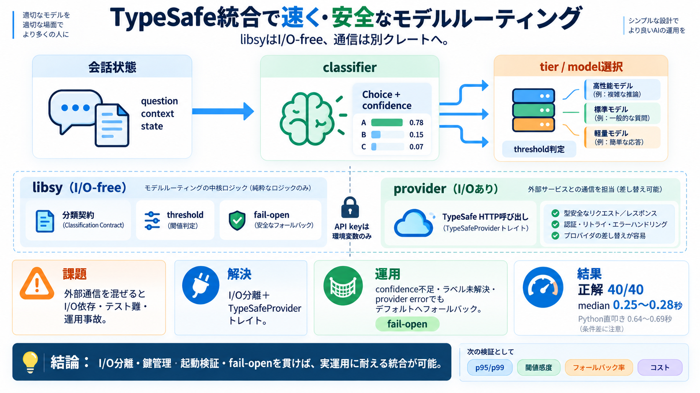

I tried implementing a library that integrates TypeSafe (Jev) into NeMo Switchyard as a classifier | DevelopersIO
I implemented the following to satisfy both options indicated in the issue (external HTTP judgment step and runner-owned…

I implemented the following to satisfy both options indicated in the issue (external HTTP judgment step and runner-owned…
Switchyard 0.2 changes the architecture more than the version number suggests. The native Rust server and `switchyard-li…
4. Make the answer call with your own HTTP client, retries, and credentials, as `call_with_fallback` does above. A compl…
Python is still the language most of us write. But many of the tools and libraries around it are increasingly written in…
### Transcript [0:00] Switchy art is a Rust based proxy and library designed to handle traffic for large language models…